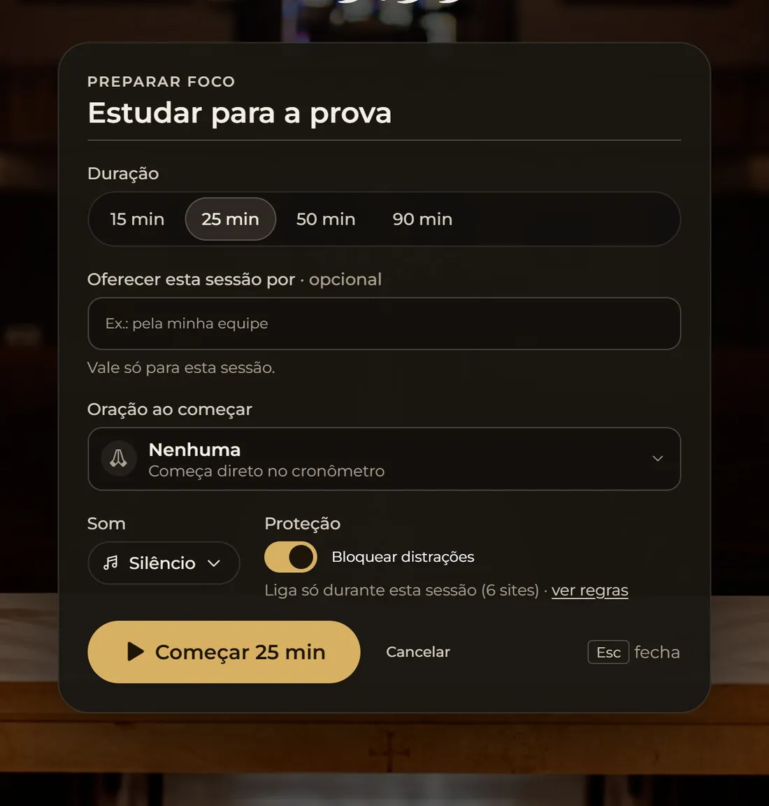
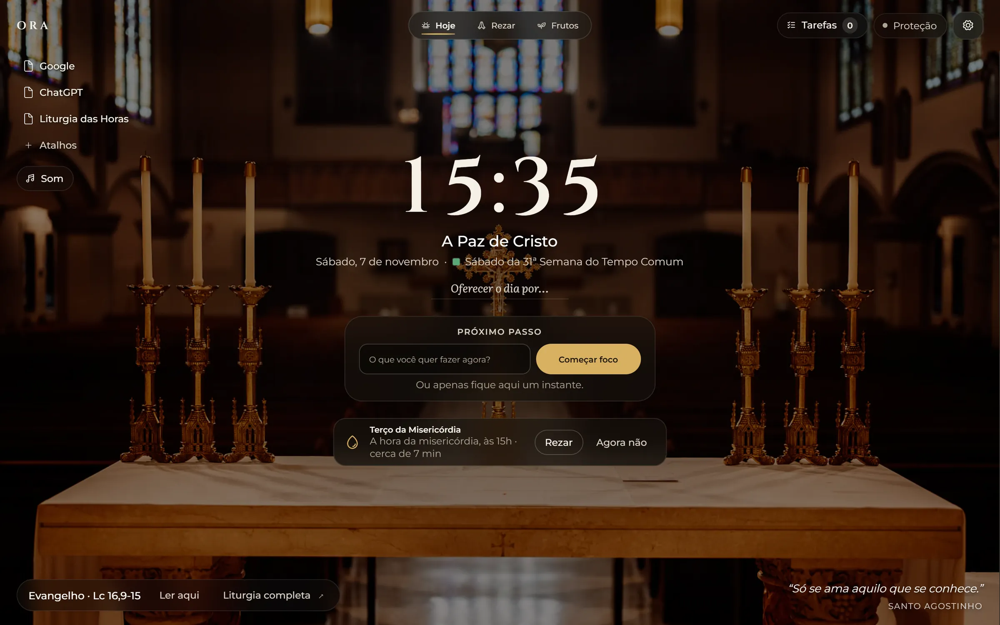
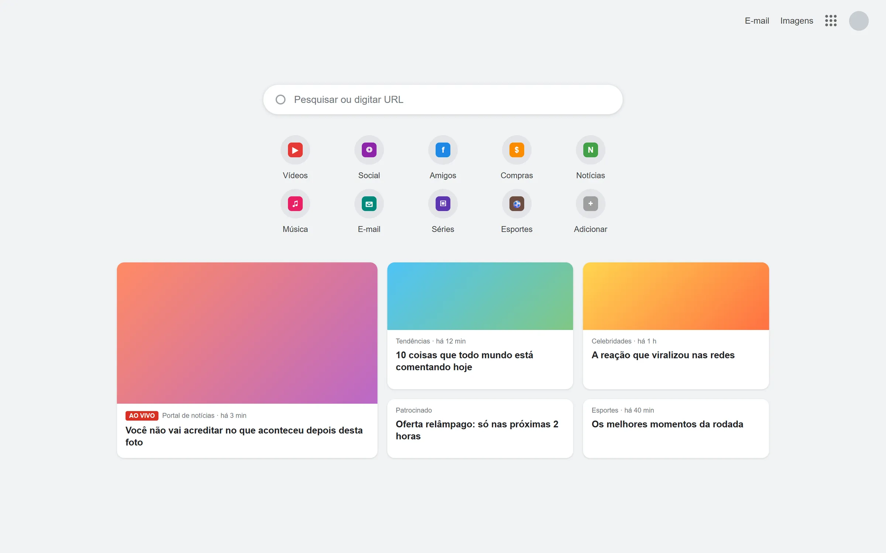
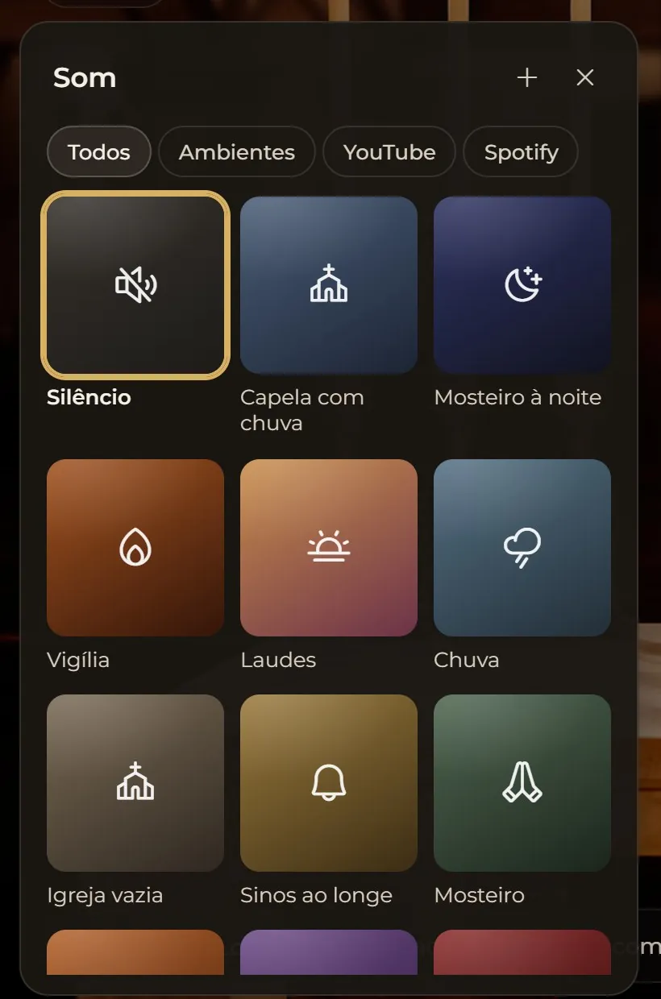

Nova aba
Nova abaFoco com intenção
Dê um nome ao que vai fazer, escolha o tempo e, se quiser, comece com uma oração curta. O tempo de oração nunca conta no cronômetro.

Gratuito para Chrome, Edge e Brave
O Ora transforma a página inicial do navegador em um lugar de silêncio: a hora, o Evangelho do dia, o próximo passo do seu trabalho e um tempo de foco protegido de distrações.
Sem anúncios · Sem conta · Seus dados ficam no seu navegador

Por que na nova aba
Você abre o navegador dezenas de vezes por dia. Aplicativos de oração esperam que você se lembre de abri-los. O Ora já está lá.
A hora, o tempo litúrgico e um próximo passo claro, no lugar de um feed de notícias.
Um convite discreto para o Angelus, o Terço da Misericórdia ou o exame da noite.
O site bloqueado lembra o que você escolheu fazer e oferece um respiro.
Antes e depois
Arraste para comparar a nova aba comum com a do Ora.

Aba comum Com o OraComo funciona
Comece por aqui: a intenção do dia, o próximo passo do seu trabalho e o Evangelho, sem distrações.
Recursos
Dê um nome ao que vai fazer, escolha o tempo e, se quiser, comece com uma oração curta. O tempo de oração nunca conta no cronômetro.

A leitura da liturgia diária, com Lectio Divina guiada para rezar com calma.
Os mistérios do dia, conta por conta, com o texto completo ou só o nome de cada oração.
Ambientes como capela com chuva e mosteiro à noite, ou suas playlists do YouTube e Spotify.

Um roteiro guiado para recolher o dia com sinceridade, e um ritual para a manhã e a noite.
Angelus, Terço da Misericórdia às 15h e o exame da noite, só quando você quiser.
Bloqueie os sites que roubam sua atenção, sempre ou só durante o foco.
Festas, santos do dia e a contagem para o Advento, com a cor litúrgica ao lado.
Uma lista simples para hoje e para depois, com rotinas que se repetem nos dias da semana.
Sim. O Ora é gratuito e sempre será: não há versão paga, anúncios ou venda de dados.
Ficam no seu navegador. O Ora não pede conta e não envia suas tarefas, sessões, reflexões ou tempo de tela para servidor nenhum. O código é aberto para quem quiser conferir.
No Google Chrome, Microsoft Edge, Brave e outros navegadores baseados no Chromium. Firefox e Safari ainda não são suportados.
É um aviso padrão para extensões que mudam a nova aba. Escolha manter as alterações. Se o navegador bloquear a instalação, siga o guia de instalação manual.
Quase tudo: orações, terço, foco, tarefas, exame e os sons ambientes do Ora. O Evangelho do dia, as fotos de fundo e as playlists do YouTube e Spotify precisam de conexão.
Não. A oração antes do foco, os convites, a proteção e o tempo de tela podem ser ligados ou desligados nas configurações. Você pode usar o Ora só para rezar, ou só para focar.
Não. É um projeto independente, feito por católicos, sem vínculo institucional com a Igreja, paróquias ou dioceses.
Leva menos de um minuto para instalar.
Siga @ora.extensao para novidades e enquetes